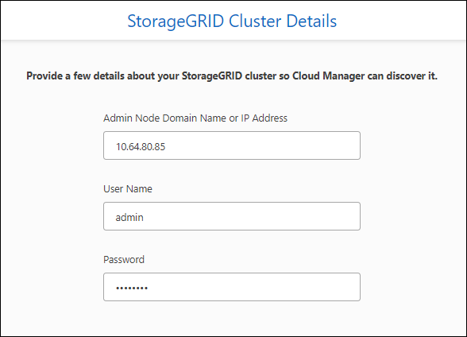
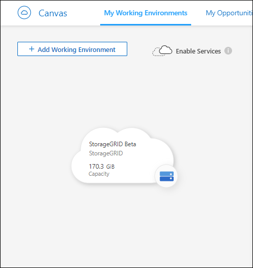

要求變更文件
要求變更文件 編輯此頁面
編輯此頁面 瞭解如何作出貢獻
瞭解如何作出貢獻
本繁體中文版使用機器翻譯，譯文僅供參考，若與英文版本牴觸，應以英文版本為準。
探索StorageGRID 各種系統
貢獻者
BlueXP可在StorageGRID 內部部署環境中探索此功能。在StorageGRID BlueXP中新增支援功能系統、可讓您完整檢視混合式多雲端的資料。
您需要的是 #8217 ；需要的是什麼
-
連接器安裝在雲端供應商或內部部署環境中、可透過網路連線至StorageGRID 該系統。
-
管理節點的網域名稱或IP位址。
-
管理節點的管理認證。
步驟
-
從導覽功能表中、選取*儲存設備> Canvas*。
-
按一下「新增工作環境」、然後選取「內部部署」。
-
選取* StorageGRID 《》《下一步》。
-
如果出現提示、請建立連接器。
如需詳細資料、請參閱上述連結。
-
在「_ StorageGRID 此叢集詳細資料_」頁面上、輸入管理節點的網域名稱或IP位址、節點的認證資訊、然後按一下「新增」。

BlueXP會探索StorageGRID 整個系統、並將其新增為在Canvas.上的工作環境。
